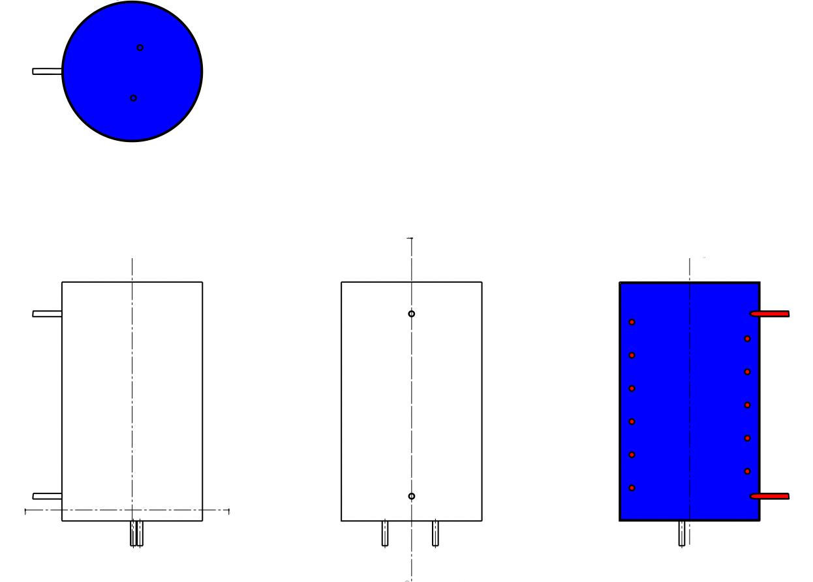
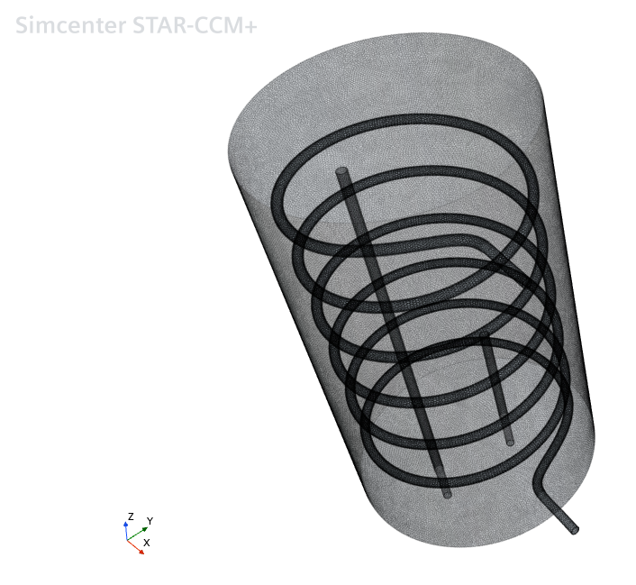
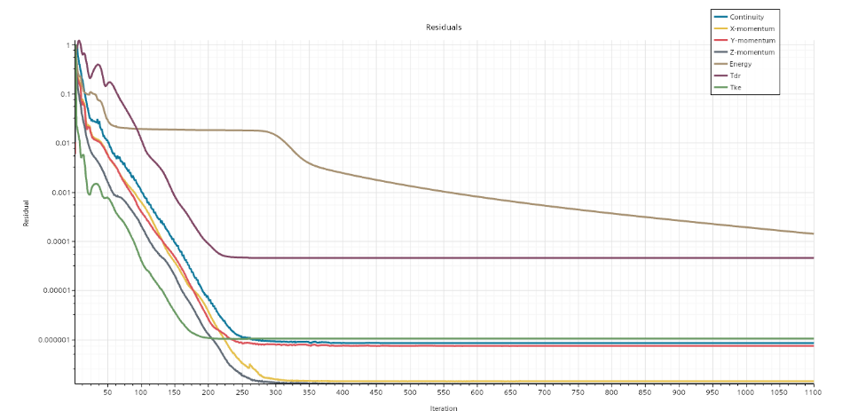

Academical Project
Water heater dimensioning: starting with the technical specifications we had to design a water heater in order to heat up 200 liters of water from 293 to 328 Kelvin degrees in 2 hours. We also had a constraint of 1 inch diameter for the hot water pipe.
After determining the heat load and the flow rate needed, I used the LMTD methodology in order to determine the exchange surface then the pipe longueur and the disposal needed inside the heater.

After this I started to use computer-aided design software - CATIA from 3DExperience- to design the heater. First, I created two pieces, a tank thanks to the part design action box and the hot water pipe thanks to the generative shape design one. Then, I combined the two parts in one in order to create the water heater.
Now, I am simulating the heater in DTS software in order to verify the respect of the technical specifications thanks to a finite element’s simulation.

First, the 3D model of the water heater had to be imported into the Star CCM+ software,
then its various boundaries had to be defined so that the nature of the
moving fluids, their interactions with the various walls, and the boundary conditions
with the walls could be defined.
Next, a mesh had to be defined in order to calculate the state of the system at every point.
We varied the different parameters (base size and surface size in particular) in order to obtain a
fine mesh and obtain relevant results during the simulation. To visualize these results,
we created cross-sectional views of the hot water tank
to visualize the propagation of heat within the different fluids.
Finally, we assigned different parameters to the fluids (density, flow rate, initial temperature, etc.) to ensure that the simulation was accurate and relevant.
In terms of readings, we decided to visualize different temperatures, the energy
involved, changes in flow rates, heat transfers, and heat capacity. We
also had the option of visualizing the temperature change at each calculation step at
any point in our mesh using the scalar scene menu

First simulation: zero flow for the cold fluid
We note that the hot water pipe is at the desired temperature (348 K=75°C), the thermal
effects spread through the cold water but struggle to be uniform throughout the tank.
In addition, the cold water stagnating at the top is not realistic if we take into account
the relative mass of hot water, which is lighter than cold water. We note that the variations
in momentum are roughly identical in all directions despite slight differences around 250
iterations, resembling more an error than a consistent result, as we no longer have the same
variation in momentum in the X and Y directions, which seems inconsistent given the geometry
of our system. As for Tke (Turbulent Kinetic Energy) and Tdr (Turbulent Dissipation Rate),
we observe that the variation in Tke shows a decrease, synonymous with variations in intensity
which decreased with the number of iterations. This highlights the stability of the model.
Similarly, the residuals tending to be constant for the Tdr curve are also an indicator of the
stability of the model. The energy decreases, tending towards 0. It will reach 0 when the system
is in equilibrium. We can clearly see that the flow rate is zero throughout our simulation for
the cold fluid, while the flow rate of the hot fluid becomes constant after a short transient
period. We note that the water at the outlet for the cold liquid is warmer than the water at the
inlet, clearly showing the temperature gradient created by our exchanger and synonymous with its
proper functioning.

Second simulation: non-zero flow rate for the cold fluid
A second model should be considered when the cold-water flow is no longer zero but in use.
In addition, it would be wise to modify the boundary parameters near the
walls so that there are no longer any areas of cold water at the top of the tank, as observed
in the first simulation.
Conclusion:
In conclusion, digital tools allow us to refine the results obtained in the theoretical part by considering
various parameters, particularly the geometry of the system, all heat exchanges and transfers,
and the unsteady evolution of the system.
Furthermore, in my model, it would be more appropriate to reduce the diameter of my coils to maximize the
exchanges between the cold liquid and the hot liquid, which are limited here by the proximity
between the coils and the wall.